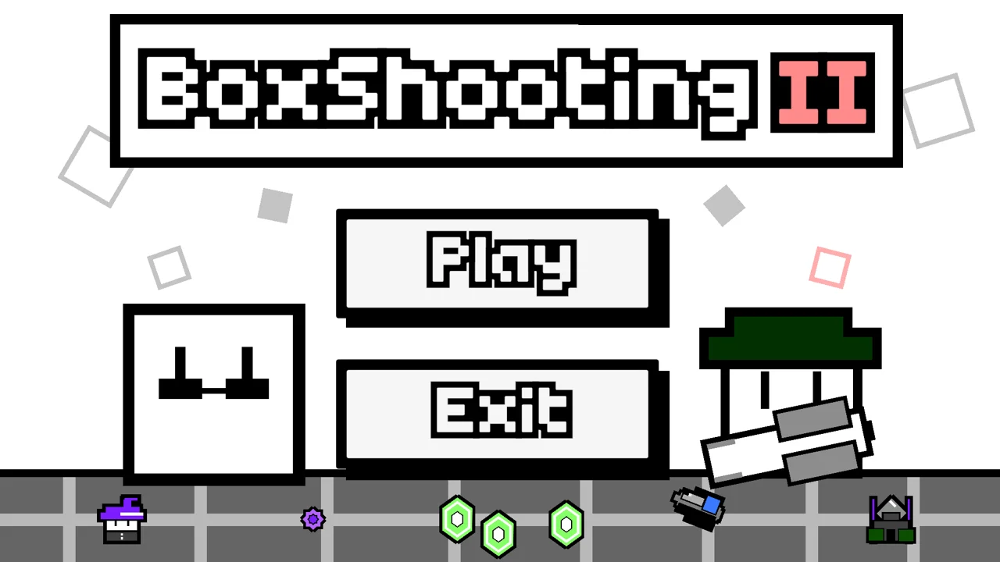
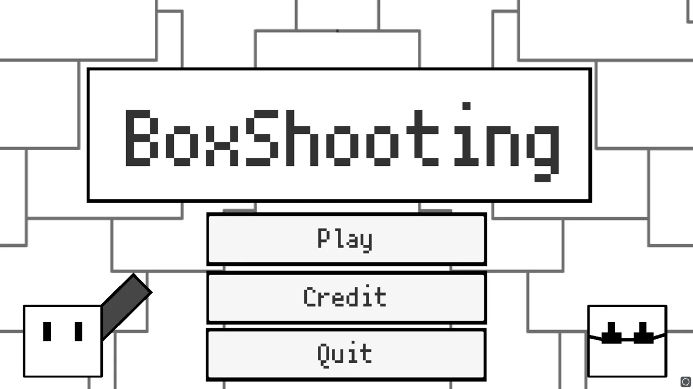

BoxShooting II RELEASED NEW
BoxShootingの続編。前作と同じチームで制作し、2026年11月にitch.ioでリリースしました。
- Role
- システム全般（プログラム担当）
- Engine
- Unity
- Release
- 2026年11月
- Period
- 約3か月（実働）
- AI
- UIデザインのみ生成AIを使用（プログラムは不使用）
Unityでのゲーム制作歴は約3年。トップダウンシューティングを中心に、遊びの手触りとそれを支える設計の両方を詰めるのが好きです。本業は数学科の学生です。

BoxShootingの続編。前作と同じチームで制作し、2026年11月にitch.ioでリリースしました。

数分で遊べるハイパーカジュアルな2Dシューティング。短いプレイの中にボス戦を複数用意しています。2人チームでの制作。